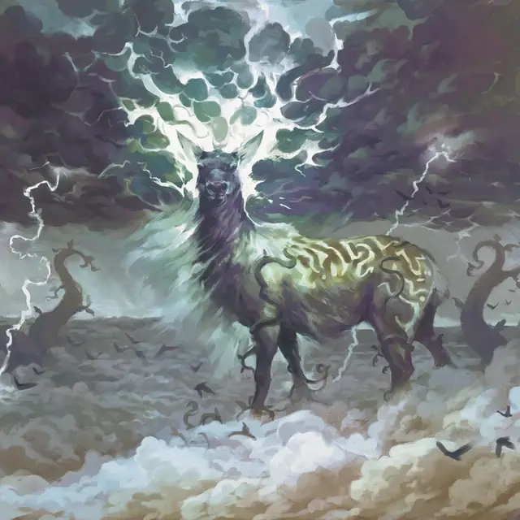

Штормовой олень
Tempest Hart
Огромный Элементаль, без мировоззрения

Класс Доспеха 13
Хиты 147 (14к12 + 56)
Скорость 50 футов, летая 50 футов
| мод | спас | ||
|---|---|---|---|
| СИЛ | 21 | +5 | +5 |
| ЛОВ | 17 | +3 | +7 |
| ТЕЛ | 18 | +4 | +4 |
| мод | спас | ||
|---|---|---|---|
| ИНТ | 3 | −4 | −4 |
| МДР | 18 | +4 | +8 |
| ХАР | 14 | +2 | +2 |
Навыки Восприятие +12
Сопротивление урону дробящий, колющий, рубящий от немагических атак
Иммунитет к урону звук, электричество
Иммунитет к состояниям истощение
Чувства пассивное Восприятие 22
Опасность 11 (7200 опыта)
Бонус мастерства +4
Особенности
Легендарное сопротивление (3/день). Если штормовой олень проваливает спасбросок, вместо этого он может выбрать успех.
Действия
Мультиатака. Олень совершает атаку Молниеносными рогами и Громовыми копытами.
Молниеносные рога. . Рукопашная атака оружием: +9 к попаданию, досягаемость 15 фт., одна цель. Попадание: 16 (2к10 + 5) урон электричеством. Если цель — существо, она должна преуспеть в спасброске Телосложения Сл 16, иначе она станет ошеломленной до начала следующего хода оленя.
Громовые копыта. . Рукопашная атака оружием: +9 к попаданию, досягаемость 5 фт., одна цель. Попадание: 14 (2к8 + 5) урона звуком.
Реакции
Олень может использовать до двух реакций за раунд, но только одну за ход.
Опутывающий рост. Сразу после того, как видимое оленем существо в пределах 120 футов от него, попадает по нему броском атаки, олень уменьшает урон по себе вдвое. Атакующий должен немедленно совершить спасбросок Силы Сл 16, так как бобовые стебли обвивают его в пространстве. В случае провала существо становится схвачено (Сл высвобождения 16) и пока захват не окончен, оно опутано. Бобовые стебли исчезают через 1 минуту, если олень становится недееспособным или когда умирает.
Молниеносный ответ. В ответ на спасбросок олень вызывает разряд молнии, нацеленный на видимое им существо, в пределах 120 футов от себя. Цель должна совершить спасбросок Ловкости Сл 16, получая 19 (3к12) урона электричеством при провале или половину этого урона при успехе.
Описание
Штормовые великаны живут высоко над Элдраином, в облачных землях, известном как Штормкельд. Массивные коттеджи, крепости и башни усеивают это волшебное царство, расположившееся среди просторов облачной дикой природы, отмеченное переплетениями гигантских бобовых стеблей и бушующими штормами. В этих дебрях обитают различные огромные существа, среди которых штормовой олень — одно из самых величественных существ.
Колоссальный олень с рогами, созданных из живых молний, штормовой олень имеет длинную гриву тонких волос, которые развеваются, словно подброшенные сильным ветром. Его узорчатая шкура напоминает извилистые бобовые стебли, которые также обвивают его ноги, плечи и бедра.
Охотники на штормовых великанов считают штормовых оленей самой достойной добычей, ценной не только мясом, но и источником молний на их рогах. Но эти существа обладают могучей силой стихий, позволяющей защитить себя.